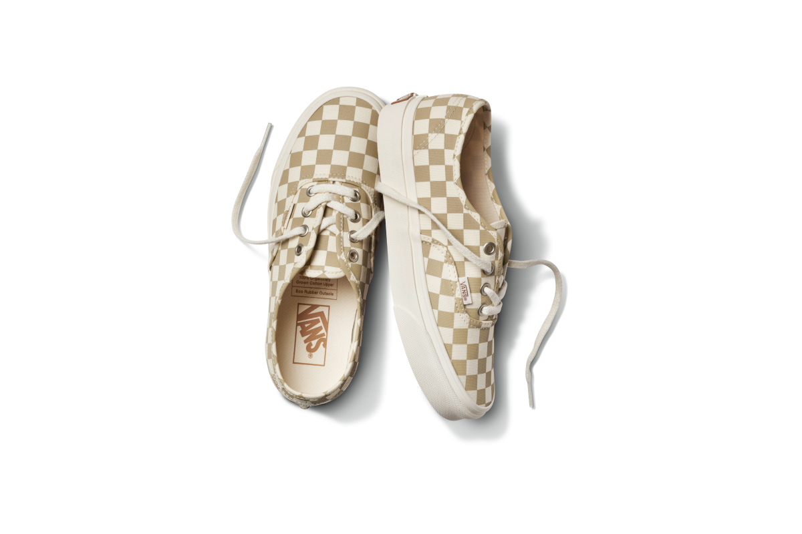

Текст: Софья Аулих
02.09.21, 13:34
Vans представил новые кеды из коллекции Eco Theory, в которой дизайнеры бренда стремятся объединить узнаваемую эстетику с ответственным отношением к окружающей среде. В нее вошли модели Old Skool, Sk8-Hi и Authentic.
Верх кед изготовлен из органического хлопка, окрашенного красителями на водной основе. Подошва выполнена из натурального каучука, а шнурки — из джутовых волокон. Стелька покрыта слоем пробки.
Палитру коллекции составили небесно-голубой, белый и черный цвета. Есть два варианта в клетку — бело-бежевую и бело-персиковую.

Кеды Eco Theory можно купить в фирменных магазинах Vans и онлайн.
Ранее Vans сделал коллаборацию с медиакомпанией Discovery. Они посвятили ее защите тигров.
Источник